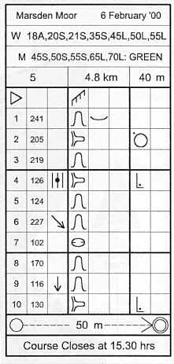

<table>
	<tr>
		<td>
			<p>For all but Colour Coded events, Pictorial descriptions are normally distributed with final event details. This is because some competitors like to fasten them to their wrist in plastic holders, especially made for the purpose.</p>
			<p>The example comes from a Badge Event in February. At this particular event Course 5 was 4.8km in length with 40m of climb. A number of different age classes competed over the same course.</p>
			<p>The information for each control, is divided into eight columns. From left to right the purpose of these columns is as follows:</p>
			<ol>
				<li><b>Control number</b> - the number of the control.</li>
				<li><b>Control code</b> - the code on the control.</li>
				<li><b>Which (of any similar) feature</b> - the options are direction, e.g. southeastern most, upper, lower, middle.</li>
				<li><b>Control feature</b> - there are almost seventy of these! Examples include re-entrant, depression, boulder, crag, path, fence, stream or marsh.</li>
				<li><b>Appearence of the feature</b> - possible options are shallow, deep, overgrown, rocky or ruined.</li>
				<li><b>Dimensions of the feature</b> - this could be the height or size.</li>
				<li><b>Location of the control</b> - examples include the 'north side', 'between', 'east corner' or 'at the foot'.</li>
				<li><b>Other information</b> - the options are refreshments, radio control, manned control or first aid.</li>
			</ol>
			<p>A booklet depicting all the possible options (and map symbols) may be purchased from the <a href="http://www.britishorienteering.org.uk/">British Orienteering Federation</a>, see <a href="bibliography.html">Bibliography</a>. Sheets containing just the pictorial descriptions are available from orienteering traders at events.</p>
			<p>Therefore, looking at the example, the start was situated 'on' a fence.</p>
			<p>The first control had a code of 241 and was a shallow re-entrant. The second control had a code of 205 and was on the northwestern side of a spur. The third control had a code of 219 and was another re-entrant. The fourth control had a code of 126 and was at the foot of the middle spur . . . and so on.</p>
			<p>See if you can work out the remaining descriptions? The only clue is that the seventh control is a depression.</p>
			<p>When you've successfully punched all ten controls you 'Follow tapes 50m to finish'. The 'Course Closes at 15:30'.</p>
		</td>
		<td></td>
	</tr>
</table>